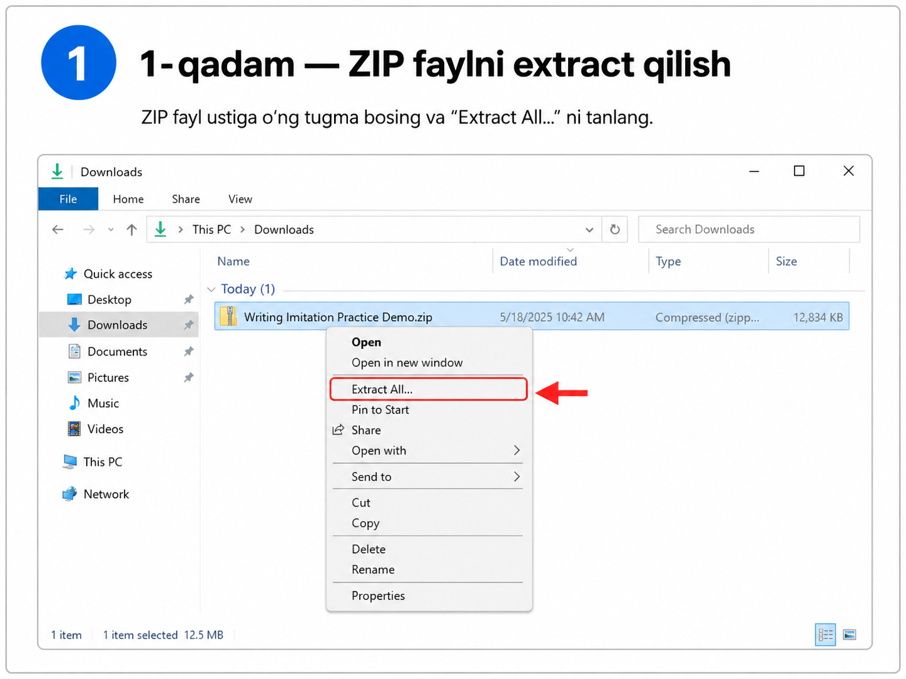
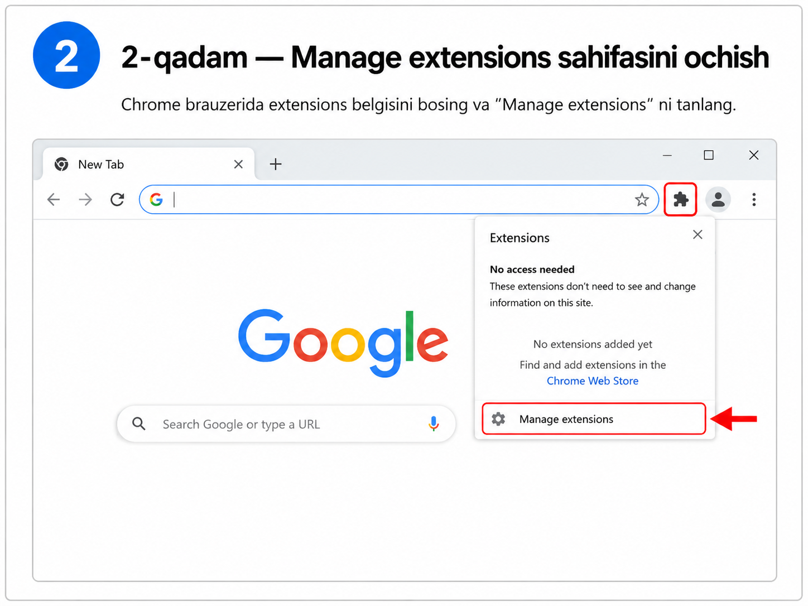
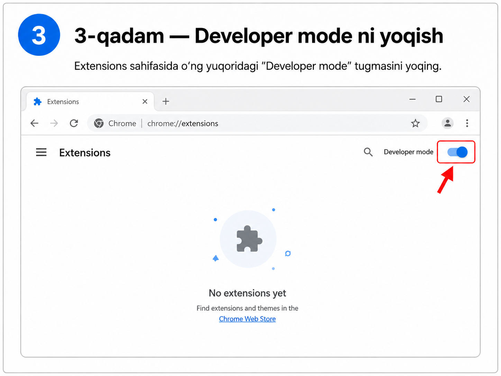
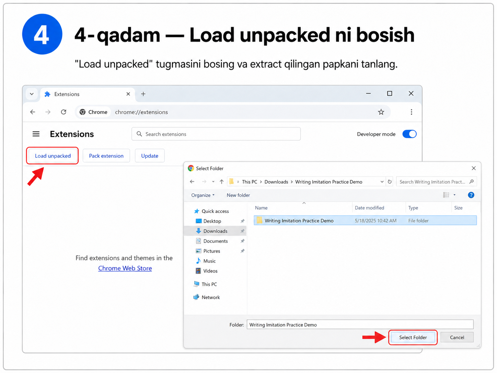
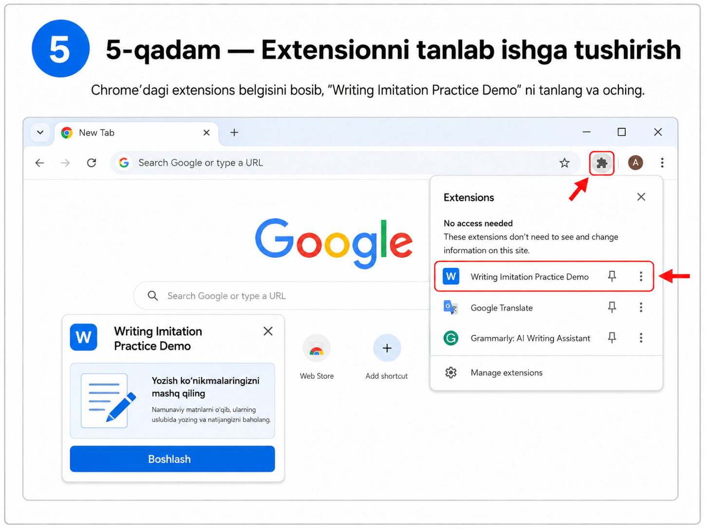

Bu dastur Speakingdagi shadowing/imitation metodini Writingga moslashtiradi.
Dasturni yuklab olishIELTS Writing Task 2 — butun dunyo bo'yicha eng past ball olinadigan qism. O'zbekistonda esa bu muammo yanada chuqur: ko'pchilik o'quvchilar Listening va Reading'dan 7–8 ball olsa ham, Writing 5.0–5.5 da qolib ketadi. Bu bitta past ball umumiy natijani pastga tortadi va ko'plab yoshlarning universitetga kirish yoki viza olish imkoniyatini yo'q qiladi. Buning sababi juda oddiy: yozish ko'nikmasini tez va samarali rivojlantirish uchun isbotlangan tizim mavjud emas.
Gapirish ko'nikmasini (Speaking) rivojlantirishda ilmiy tasdiqlangan va butun dunyoda keng qo'llaniladigan Shadowing / Imitation usullari mavjud. Imitation usulida o'quvchi ingliz tilida so'zlashuvchining gapini tinglaydi, audioni to'xtatadi (pauza) va gapni qanday eshitgan bo'lsa, xuddi shunday takrorlaydi.
Bu usul orqali talaffuz, intonatsiya, grammatik struktura va lug'at boyligi tabiiy ravishda o'zlashtiriladi. Miya to'g'ri tuzilgan gaplarni eshitib, to'xtab, qayta ishlashi natijasida millionlab odamlar aynan shu yo'l bilan ingliz tilida ravon gapirishni o'rgangan.
Biroq, nima uchun yozish ko'nikmasi uchun bunday usul shu paytgacha yaratilmagan? Shadowing va Imitation faqat og'zaki nutq uchun qo'llanib kelingan. Yozma nutqni xuddi shunday tabiiy va avtomatlashtirilgan tarzda o'rganish uchun hech qanday platforma yo'q.
Asosiy muammo shundaki, o'quvchi o'z xotirasida va ongida yo'q narsani qog'ozga tushira olmaydi. Agar o'quvchining lug'at boyligi va gap qurish qobiliyati ma'lum bir (masalan, 5.5) darajada bo'lsa, u kutilmaganda Band 9 darajasidagi jumlalarni, murakkab akademik so'zlarni va professional bog'lovchilarni o'zidan ixtiro qila olmaydi.
Ko'plab o'qituvchilar shunday maslahat berishadi: "Qayta-qayta yozishni mashq qilaver". Bu mutlaqo ishlamaydigan usul. Nega? Chunki o'quvchi har gal yozganida faqat o'ziga ma'lum bo'lgan, chegaralangan va ehtimol xato bo'lgan bilimidan foydalanadi. U shunchaki o'zining past darajasini va noto'g'ri odatlarini qayta-qayta takrorlab, miyasida mustahkamlaydi, xolos.
Ikkinchi keng tarqalgan xato maslahat: "Esseni yoz va AI (sun'iy intellekt) orqali tekshirtir". AI faqatgina o'quvchi yozgan gapning grammatikasini to'g'rilab berishi mumkin. Lekin o'quvchining darajasi past bo'lsa, uning yozgan matni juda sodda, tartibsiz va yaxshi rivojlanmagan bo'ladi.
Bunday sodda va tuzilmasi zaif gaplarning grammatikasi 100% to'g'ri bo'lganida ham, u baribir past darajali, "yomon" esse hisoblanadi. Shunchaki grammatikani to'g'rilash o'quvchiga murakkab, chuqur fikrli va akademik darajada mukammal gaplarni tuza olish qobiliyatini bermaydi. Sun'iy intellekt to'g'rilab bergan matnni o'qish ham to'liq yechim emas, chunki o'quvchi uni o'zi yozmadi, keyingi safar yana xuddi o'sha xatoga yo'l qo'yadi. Yagona to'g'ri yechim — o'quvchini professional darajadagi esselarni bevosita o'zi yozib, o'zlashtirishga o'rgatishdir.
Dastlab, o'quvchi Band 9 darajasidagi esseni dasturga kiritadi va tizim uni bitta gapdan iborat bo'laklarga ajratadi. O'quvchiga ekranda faqat bitta gap ko'rsatiladi. Xuddi og'zaki Imitation'dagi pauza kabi, o'quvchi gapni o'qiydi (notanish so'zlarning ta'rifini ko'rishi ham mumkin) va xotirasiga joylaydi.
O'quvchi klaviaturada yozishni boshlashi bilanoq, asl matn yashirinadi. Eng muhim jihati shundaki, o'quvchi butun gapni xotirasidan tiklab, xatosiz yozib chiqishi shart. Agar yozish jarayonida xato qilsa, dastur qaysi so'z xato ekanligini darhol ko'rsatadi, lekin matn baribir yashirinligicha qoladi.
O'quvchi shu bitta gapni birinchi urinishdayoq 100% to'g'ri yozmagunicha, dastur keyingi gapga o'tkazmaydi. O'quvchi qiynalgan va xato qilgan so'zlar esa Spaced Repetition (oraliqli takrorlash) usulida 1, 3, 7, 14 va 30 kundan so'ng yana mashq qildiriladi.
Natijada, o'quvchi o'zining past darajali fikrlarini AIda to'g'rilashga urinmaydi, balki to'g'ridan-to'g'ri professional andozalarni bevosita o'zi yozish orqali mushak xotirasiga muhrlaydi. Bu yozish ko'nikmasini rivojlantirishdagi butunlay yangi va isbotlangan yondashuvdir.
Men birinchi bo'lib ushbu muvaffaqiyatli metodni yozish ko'nikmasiga tatbiq etdim va Writing Imitation Practice (Chrome extension) dasturini yaratdim.
Writing Imitation Practice · 2026Band 9 darajasidagi esseni kiriting. Tizim uni bitta-bitta gaplarga ajratadi va faqat bitta gap ko'rsatadi.
Gapni o'qing, notanish so'zlarning ta'rifini ko'ring. Xotirangizga joylashtiring — pauza xuddi shadowing'dagi kabidek.
Yozishni boshlaganingizda asl matn yashirinadi. 100% to'g'ri yozmaguningizcha keyingi gapga o'tilmaydi.
Qiyin so'zlar 1, 3, 7, 14 va 30 kundan so'ng qayta mashq qilinadi. Mushak xotirasi mustahkam bo'ladi.
Quyidagi videoda dasturdan qanday foydalanish tushuntiriladi.
Rasmlar dasturni ZIP fayldan chiqarish, Chrome'ga yuklash va ishga tushirishni ko'rsatadi.
Yuklab olingan ZIP faylni ochishdan oldin uni alohida papkaga chiqarib oling.

Chrome brauzerida extensions belgisini bosing va "Manage extensions" ni tanlang.

Extensions sahifasida o'ng yuqoridagi "Developer mode" tugmasini yoqing.

"Load unpacked" tugmasini bosing va extract qilingan papkani tanlang. ZIP faylni emas, papkani tanlash kerak.

Yuklangandan keyin extension menyusidan dasturni tanlang va "Boshlash" tugmasini bosing.

Rasmlar orqali o'rnatishni ko'rib chiqing, keyin ZIP faylni yuklab olib sinab ko'ring.